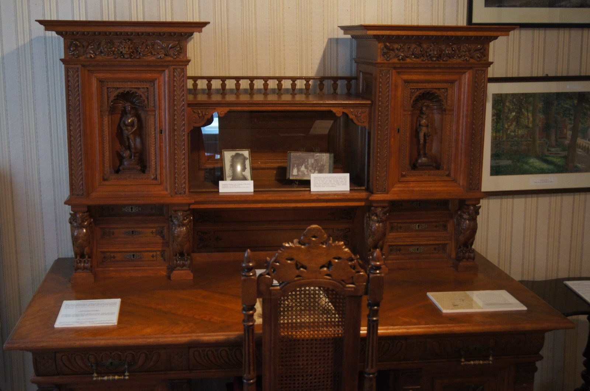

Kapitel 2 – Lærling, svend og fritidstegner
Nolde kommer i lære som billedskærer i Flensborg og udfordres af byens mangfoldige adspredelsestilbud, men han holder fast i sig selv.

Nolde kommer i lære som billedskærer i Flensborg og udfordres af byens mangfoldige adspredelsestilbud, men han holder fast i sig selv.